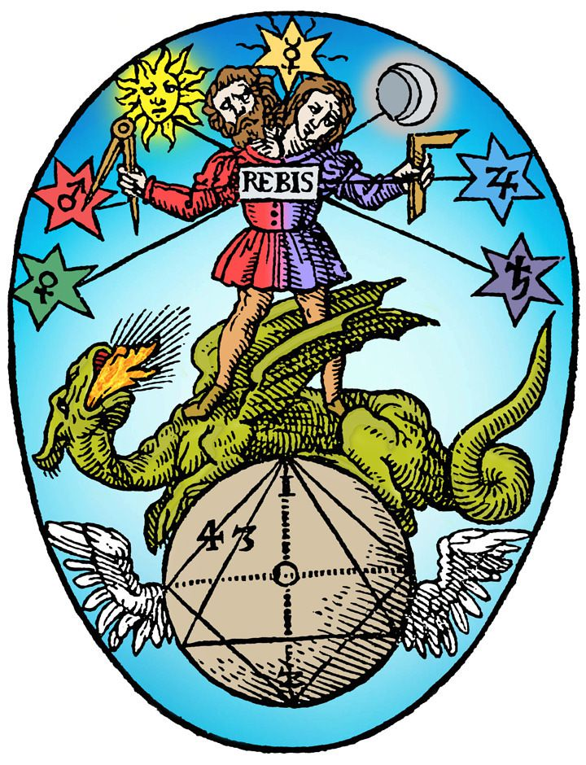

Hermetic Prenatal Epoch
Prenatal Epoch in Hermetical Astrology
The prenatal epoch is purportedly a means by which to gain a more accurate birth time, called rectification, of the chart. It was first mentioned in a text from about the tenth century called the Centiloquium, the most influential book ever on astrology. Originally attributed to Claudius Ptolemy (Greek: Πτολεμαῖος, Ptolemaios; Latin: Claudius Ptolemaeus; c. 100 – c. 170 AD) and known as the Centiloquium of Ptolemy for many centuries, it has more likely been written in the Arab world some nine centuries after Ptolomy. The particular aphorism which is of interest is number fifty-one and generally referred to as the Trutine of Hermes Trismegistus.Plato, the Daimon and Birth
In the “Myth of Er,” which concludes the Republic, Plato outlines the process by which the discarnate soul is paired with its Daimon who guides its descent through the planetary spheres, as it takes on the planetary qualities corresponding to each sphere (such as the vices and virtues) and, finally, is coupled with a body at the pre-natal syzygy (the new or full moon immediately preceding birth) and is, finally, incarnated in the elemental/terrestrial sphere of Earth.This descending sequence alludes to an inverse operation – one in which the soul of the initiate ascends, with the help of its Daimon (Guardian Angel, Oikodespotes, Higher Genius, Tutelary Spirit, etc.) and aided by theurgical rites, through the cosmic spheres and re-integrates with the One, attaining the state of henosis/gnosis/theosis, depending on the tradition in question.
- Written By Jaime Paul Lamb
Calculation of the Prenatal Epoch
The 51st Centiloquium of Ptolemy describes it thus: “In what sign the Moon is at the time of birth, make that sign the ascendant in conception; and in what sign she is found at the conception, make that or its opposite the sign ascending at the birth.”Getting estimated epoch
first get the estimated epoch's asc and moon
waxing birth moon: birth moon lon = epoch1 ASC lon (ASC = MOON)
birth ASC lon = epoch1 moon lon (MOON = ASC)
waning birth moon: birth moon lon = epoch1 DESC lon (ASC = MOON + 180)
birth DESC lon = epoch1 moon lon (MOON = ASC + 180)
data used
-----------------------------------------------------------------
tropical month: 27.321582241 days on 1.1.2000 incr. 0.013s per century
360°/27.321582241 = 13.176396477 degrees per day
but using 13.162 because:
over 268.1738147210756 days, too short by 6h 58m (418m)
over 273.85434728529464 days, too short by 9h 3m (543m)
div = 13.162; // 13.176396477
days = (360 * 9 + atm + 180*(more+below))/div;
epoch1 = pc->tjd - days;
output from astroboy:
-----------------------------------------------------------------
1 waxing 0 below 1 more 0 atm 125.73 days 269.39
root 15.02.1957 00:01:58.0 ut
root asc 24°44'53.2"Ar moon 00°28'55.1"Vi
epoch asc 00°28'55.1"Pi moon 24°44'53.2"Li
1 estimated epoch
aim 21.05.1956 14:37:53.2 ut
aim asc 13°33'19.7"Pi moon 25°16'50.7"Li
1 match epoch moon to aim
adj 21.05.1956 13:38:25.7 ut
adj asc 00°28'41.9"Pi moon 24°44'52.5"Li
1 match epoch asc to aim
epoch 21.05.1956 13:38:26.8 ut
epoch asc 00°28'55.1"Pi moon 24°44'53.0"Li
1 match root to epoch
root2 15.02.1957 00:01:58.0 ut
root2 asc 24°44'53.0"Ar moon 00°28'55.1"Vi
-----------------------------------------------------------------
root2 15.02.1957 00:01:58.0 ut
epoch 21.05.1956 13:38:26.8 ut
About
Hi, my name is Rod Schneider and I have created this website to illustrate how, with the help of astrology, that negativity can be converted into something more positive. The astrology being shown here is rooted in the most ancient inceptions derived from Hermetism. It is technical but in the hands of a practitioner already familiar with astrology has great potential to be helpful. There is also much help for non-astrologers to use astrology in a different manner, namely with cycles and phases.Comments and contributions are always welcome.
Contact: rodschneider35@gmail.com